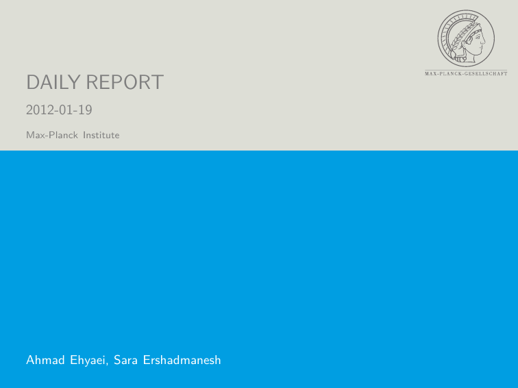
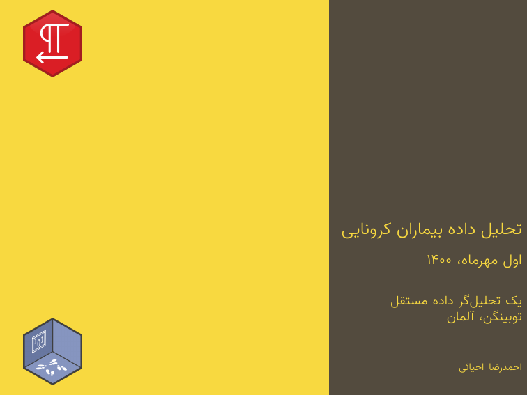
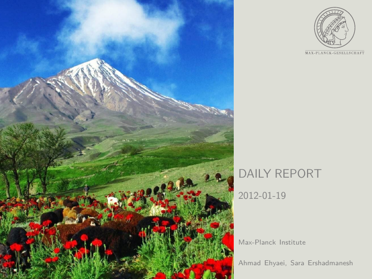
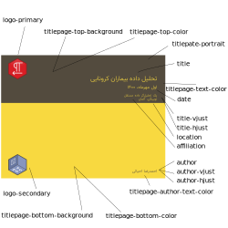
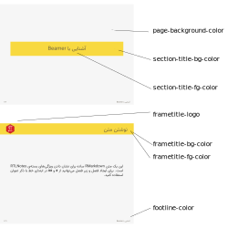

vignettes/articles/04_pdf_presentation.Rmd
04_pdf_presentation.RmdIn Latex settings, the Beamer is a well-known class for making slides. In the pdf presentation template, this class was modified with the RTLNotes theme. To build a presentation from R Markdown, you specify the latex_presentation output format and configure YAML metadata to use template features. Using the # and ## heading tags, you may construct a slide show that is divided into chapters and sections. Here’s an example of YAML and output presentation.
---
title: "تحلیل داده بیماران کرونایی"
date: "اول مهرماه، ۱۴۰۰"
author: احمدرضا احیائی
affiliation: "یک تحلیلگر داده مستقل"
location: "توبینگن، آلمان"
fontsize: 10pt
titlepate-portrait: false
logo-primary: src/icon/RTLNotes.png
logo-secondary: src/icon/RWLogo.png
frametitle-logo: src/icon/RTLNotes.png
output:
RTLNotes::latex_presentation
---
The two main features in the presentation are titlepate-portrait and titlepage-bottom-background. The titlepage style can be defined in two ways: landscape or portrait, and is controlled by titlepate-portrait. You can also put an image in the bottom background by using titlepage-bottom-background, as you see in the below examples. For more details, click on the image and see the full document for each example.
|  | |
|  |
For best output customization, there are many features for the title page and section pages that are embedded in the template that can be set in YAML configuration.
titlepate-portrait: a Boolean variable that determines the style of the first page to be displayed as either a portrait or a landscape.titlepage-top-color: Hex color code without # for fill top title page.titlepage-bottom-color: Hex color code without # for fill bottom title page.titlepage-top-background: image path for the background of the top title page.titlepage-bottom-background: image path for the background of the bottom title page.logo-primary: image path for the main logo on the top right title page.logo-secondary: image path for the second logo on the bottom right title page.titlepage-text-color: Hex color code without # for the title page text without an author.title-vjust: An integer number used to determine the vertical position of the first page’s title text. This value is somewhere between -200 and 200. This number changes depending on the document. It takes some trial and error to find its exact placement.title-hjust: An integer number used to determine the horizontal position of the first page’s title text like as title-vjust.titlepage-author-text-color: Hex color code without # for the author in title page.author-vjust: An integer number used to determine the vertical position of the first page’s author text like as title-vjust.author-hjust: An integer number used to determine the horizontal position of the first page’s author text like as title-vjust.
page-background-color: Hex color code without # for background of pages.section-title-fg-color: Hex color code for section title.section-title-bg-color: Hex color code for background section title.frametitle-fg-color: Hex color code for frame title.frametitle-bg-color: Hex color code for background frame title.frametitle-logo: image path for the logo on the top right frame title.footline-color: Hex color code for footline.